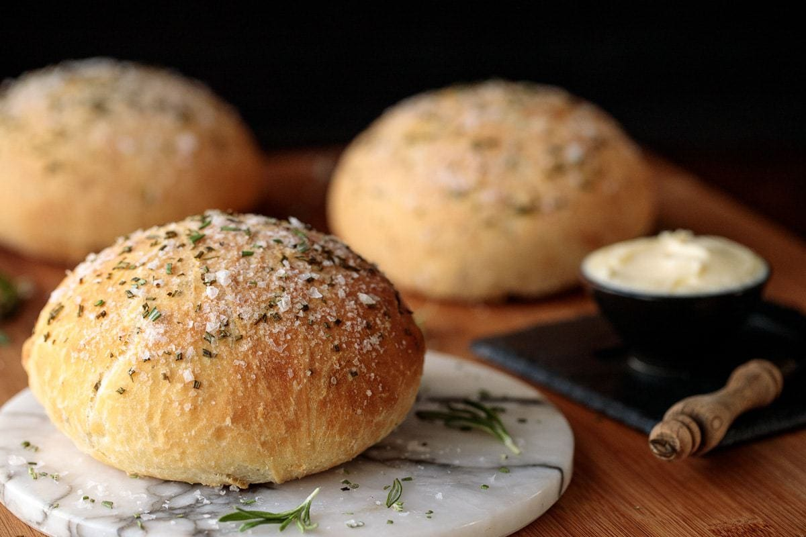

Rosemary Bread Recipe
Home

Description
This Ridiculously Easy Rosemary Bread definitely earns its ridiculously easy name but, even better... it's ridiculously delicious!
Prep Time 15 minutes
Cook Time 28 minutes
Total Time 43 minutes
Ingredients
- 4 cups bread flour plus extra for shaping
- 2 teaspoons kosher salt
- 1 teaspoon active dry yeast traditional
- 1 tablespoon fresh finely chopped rosemary
- 2 cups room temperature tap water
- 1 tablespoon melted butter
- 1 teaspoon flaky sea salt for topping
- 2 teaspoons finely chopped fresh rosemary for topping
Steps
- In a medium-large bowl, whisk together the bread flour, salt, yeast and rosemary. Make a well in the center and add the water. Mix with a sturdy rubber spatula until all flour is incorporated. Don’t worry, the dough will be wet and sticky, that’s how it should be.
- Cover the bowl with plastic wrap and leave to rise at room temperature overnight or for up to 12 hours.
- The following morning (or after 8-12 hours), the dough will have risen, but it may still look shaggy and its surface will be covered with bubbles. Line a sheet pan with parchment paper. Preheat the oven to 425ºF.
- Spread a generous ¼ cup of flour on a work surface. Dump the dough out onto the floured surface and turn it several times to coat with flour. I like to use a bench or baker's scraper for this. Knead the dough for one minute, adding more flour to the work surface as needed.
- Divide the dough into 2 or 3 fairly equal portions, turning each piece in the flour to coat. (The bench scraper is also great for cutting the dough).
- Shape each piece into a ball, pulling edges under and pinching together to make a smooth rounded top. Place loaves on prepared pan, smooth side up. If the dough is sticky as you’re shaping, just roll the piece in more of the flour.
- Brush each loaf all over with melted butter. Sprinkle generously with finely chopped rosemary and sea salt.
- Allow bread to rise for about 20 minutes while the oven is preheating. Don't worry if the dough flattens a little while it's resting. It will puff up nicely in the oven.
- Transfer pan to the oven. Bake 23-28 minutes or until nicely golden. Transfer bread to a cooling rack to cool completely.
- If making in advance, remove from oven when pale golden brown (about 3-4 minutes less). Cool completely, then freeze on a baking sheet. Once frozen, transfer each loaf to a large ziplock bag and store in the freezer.
- To serve, allow bread to thaw, then heat for 8-10 minutes at 325˚F or until nicely golden brown.